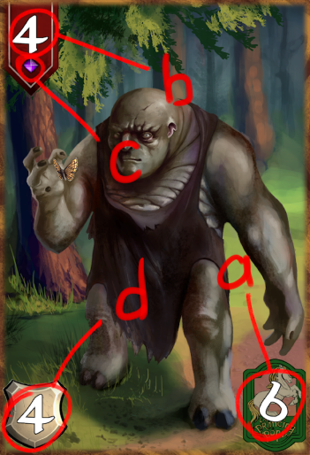
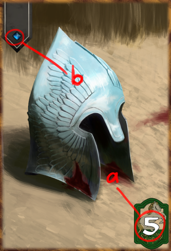

ОПИСАНИЕ МЕХАНИК
Типы карт
Отряд
Карта данного типа выставляется на игровое поле.
Она имеет стоимость a (количество ед., требующееся для разыгрывания данной карты),
атаку b (если этот показатель становится ниже 0, карта уходит в сброс),
редкость c (этот показатель влияет на редкость выпадения карты из бустера),
может иметь броню d (это дополнительный показатель, бывает не у всех карт.
Является дополнительным здоровьем карты, если карту с таким показателем атакуют,
в первую очередь, урон наносимый этой карте вычитается из этого показателя,
если урон больше показателя брони, то оставшиеся при вычитании единицы вычитаются из атаки).
Может иметь способность e. Может иметь способность с пометкой дальний. ряд
Заклинание
Карта данного вида используется только 1 раз и после использования сразу уходит в сброс.
Карта данного типа имеет стоимость a, редкость b и способность c
Чары
Карта данного вида при разыгрывании прикрепляется к карте отрядаВ игре n кол-во колец.
Каждое имеет свой особый эффект. Игрок может взять с собой только 1
(в бою оно будет отображаться внизу, около иконки игрока), или же более. Есть 4 исхода.
Кольцо
После применения, в любом режиме игрок имеет особый пассивный эффект.
В любой момент он может задействовать кольцо, что сделает что-нибудь по типу
атаки отряда противника, хилла, переигровки, замена карты и т.д.
Игровое поле
Поле содержит 4 ряда, по два на каждого игрока (передний и дальнобойный).
Карты, выставленные в передний ряд, могут атаковать карты в рядах противника и самого противника.
Карты, выставленные в дальнобойный ряд атаковать не могут, но у них можно использовать способность
с надписью дальний. ряд.
Атака
Когда одна карта атакует другую, у них взаимно вычитается показатель атаки
(т.е. из атаки одной карты вычитается атака другой карты и наоборот) Рис.
При уничтожении карта должна убраться с игрового поля в (сброс).
Сброс не отображается на экране.Когда карта атакует противника,
у противника вычитается из показателя здоровья, число равное показателю
атаки атакующей карты (изначальное число здоровья игрока и противника равно 35)
НАЧАЛО ИГРЫ
Оба игрока начинают бой с 35 единицами здоровья.
Игра начинается с определения того, кто ходит первый
(вероятность ходить первым 50%). После чего карты в
выбранных игроками колодах перемешиваются и игрокам выдается
по 5 карт с верха своей перемешанной колоды.
Совершение хода
Ход ограничивается 30 секундами
Начинается ход с того, что игроку выдаётся карта с верха его колоды.
После чего он может в любой момент хода, разыграть 1 карту (в ход) из руки. Также в любой момент хода может атаковать своими картами, выставленными на стол на прошлом ходу или ранее, карты противника или героя противника. (атаковать могут только карты выставленные в передний ряд). Также в любой момент хода может использовать способность карт, находящихся на столе.
Заканчивается ход, когда игрок нажимает кнопку (Конец хода) или по истечении 30 секунд.
(Игрок, который получил право первого хода, в свой первый ход не берёт карту).
ПОБЕДА ИЛИ СМЕРТЬ
Проигрывает игрок у которого осталось 0 или менее жизней.